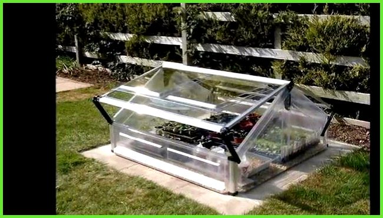

Cultivando juntos un futuro sostenible: tecnología e innovación al alcance de tu hogar
Es una iniciativa revolucionaria que combina automatización y tecnología para mejorar la producción de alimentos frescos en las zonas urbanas(Casas, apartamentos, conjuntos residenciales, edificios, etc.) reducidas. A través de invernaderos inteligentes, AGROASIST facilita la siembra eficiente con sistemas automatizados que regulan el ambiente, el riego y la nutrición de los alimentos.

El proyecto AGROASIST ha sido desarrollado por Danna Fernanda Motta Hernández, estudiante de primer semestre en el Tecnológico de Automatización Industrial.
¿Cómo tener un invernadero automatizado con acceso a una aplicación como asistente para las siembras de alimentos?
Desarrollar una aplicación que proporcione datos en tiempo real sobre las mejores temporadas de siembra ofrecería una herramienta invaluable para las personas. Los invernaderos automatizados juegan un papel crucial en este contexto, protegiendo los cultivos y regulando factores ambientales.
Al integrarse con la aplicación, se maximizan los beneficios, permitiendo ajustes automáticos en tiempo real y asegurando condiciones óptimas para el cultivo continuo.

Diseñar, implementar y optimizar un sistema automatizado en los invernaderos que contribuya a la seguridad alimentaria y nutricional, proporcionando un entorno controlado y sostenible que maximice la siembra de alimentos frescos en espacios reducidos. Además, mejorar la eficiencia energética y la calidad de los cultivos, reducir el uso de pesticidas y facilitar la gestión remota, promoviendo prácticas agrícolas innovadoras en áreas urbanas, desde la comodidad del hogar.

"AGROASIST transforma pequeños espacios en grandes oportunidades. Cultiva el futuro desde casa, conecta con la naturaleza y construye un mundo más sostenible, donde cada semilla es un paso hacia un planeta mejor.